Áreas de investigación
Estado del arte en investigación para dispositivos móviles
Líneas de investigación
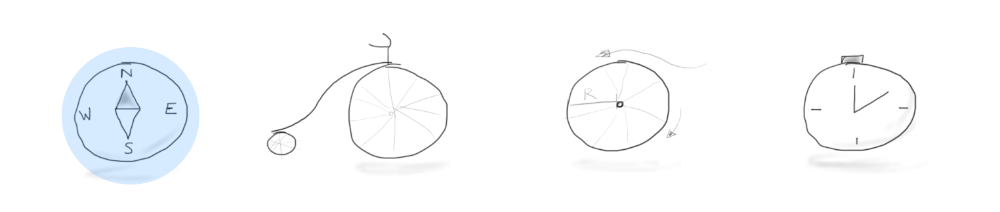La evolución de los paradigmas de interacción
y sus posibilidades
CLI: Command Line Interface
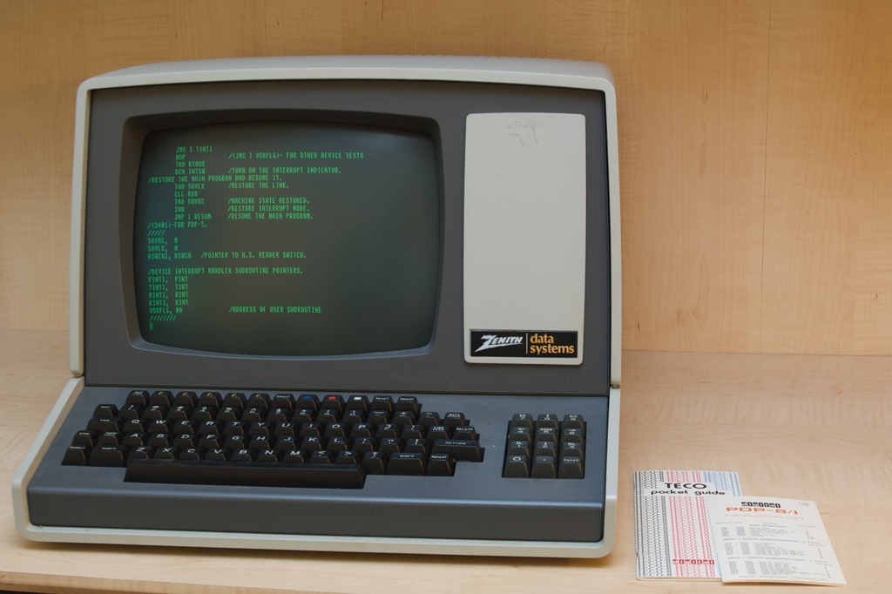- Basados en texto y memoria
- Muchos comandos: copy, cd, dir...
- Pocas formas de interactuar: entrada/salida texto y componer comandos.
- Los usuarios deben recordar los comandos
- Es posible componer funcinalidades
GUI: Graphical User Interface

- Basado en gráficos y reconocimiento
- WIMP: Window, Icons, Menus, and Pointing device
- WYSIWYG: What you see is what you get
Niveles de indirección entre acción y resultado.
NUI: Natural user interfaces
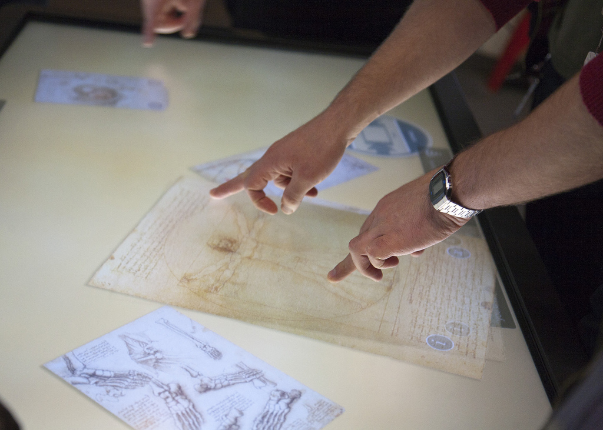- Representación directa
- Manipulación directa
- Física basada en la intuición espacio-temporal
- Responder al contexto
Agarawala, Anand. Ravin Balakrishnan. Keepin' it Real: Pushing the Desktop Metaphor with Physics, Piles and the Pen. Proceedings of CHI 2006 - the ACM Conference on Human Factors in Computing Systems. pp. 1283–1292
- Física del mundo real
- Nuevas formas de organizar: apilar, escanear...
Zoomable User Interfaces
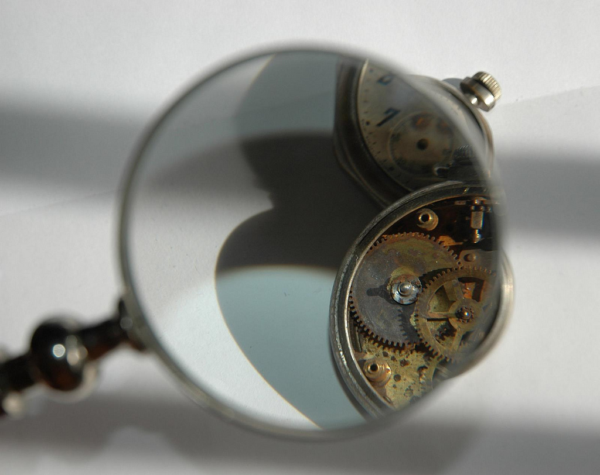Chrono zoom Ejemplo en iOS7
Gestos y el espacio 3D
Leap motion
No UI
- Ir al coche
- Sacar el teléfono
- Activar el teléfono
- Desbloquear el teléfono
- Buscar la app entre múltiples iconos
- Iniciar la app
- Acceder a la pantalla principal
- Encontrar la opción de desbloqueo
- Usar el slide para desbloquear
- Abrir la puerta del coche
- Ir al coche
- Abrir la puerta del coche
Actividad: Diseña una solución NoUI, NUI, GUI
Áreas de investigación
Interacción más cercana a tu cuerpo
- Tamaño reducido
- Funcionalidad específica
Factores que impulsarán esta idea según Philip van Allen:
- Impresión 3D
- SoC: System on a chip
- Software y Hardware Open Source
iPod Shuffle
Fit bit
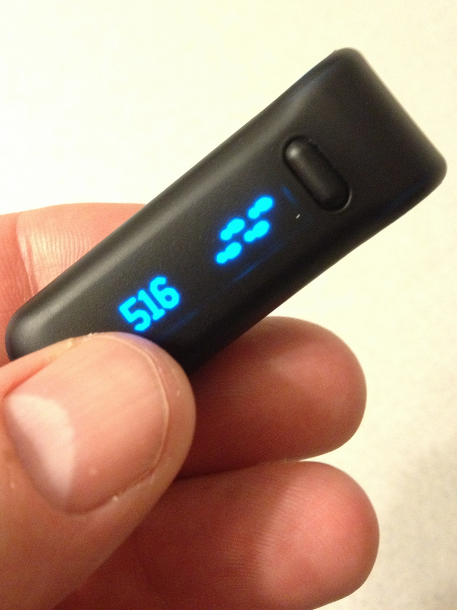 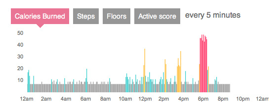Interacción más cercana al entorno físisco
SixthSense
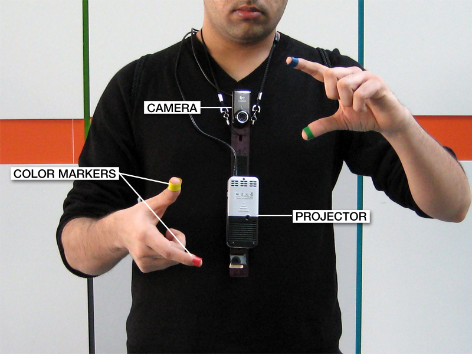SixthSense
Cooking simulator
Tokyo Institute of Technology
Emociones
Animismo: emociones en objetos
Wild State Touch Interface from Joshua McVeigh-Schultz on Vimeo.
Philips: "emotion mirrors"
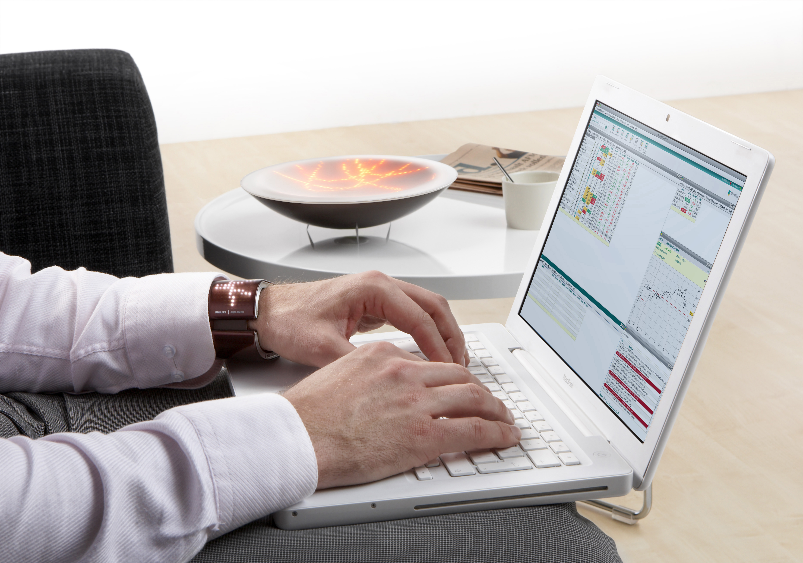 www.mirrorofemotions.com/Interacción en mercados emergentes
- Iniciación en el mundo digital por el teléfono móvil, en lugar del PC
- Problemas y necesidades específicas
M-Pesa: enviar dinero
Records for life
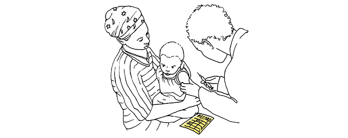Multi-dispositivo
Patrones multi-dispositivo
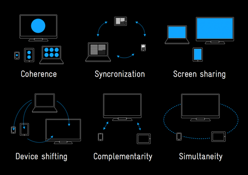Display Blocks Prototype #1 from Pol Pla on Vimeo.
Y muchos más...
Actividad: estado del arte de un área
- Elabora un estado del arte de un áreas del diseño de interacción:
- Trabajos y autores que tratan el tema
- Aspectos y aproximaciones
- (Opcional) Anota posibles ideas de mejora en el área
Diseño de nuevos servicios
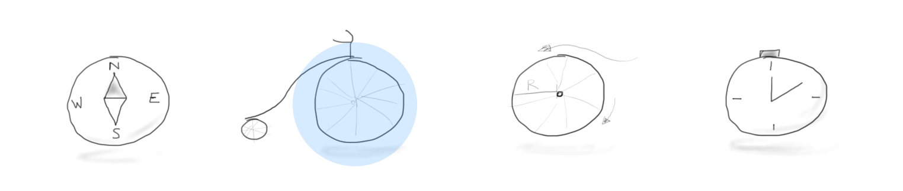- Enender a usuario y sus necesidades
- Explorar soluciones
- Probar en la práctica
Modelos de interacción
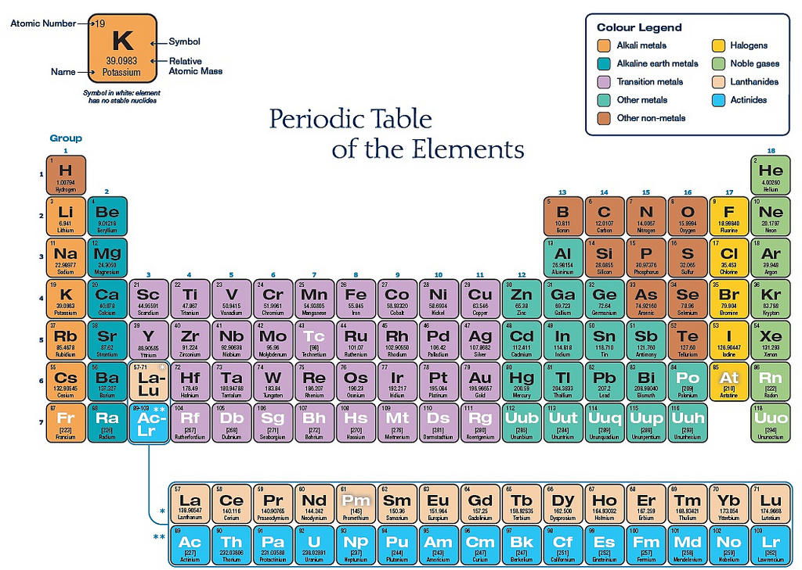Tipos de modelos
- Descriptivos
- Predictivos
Cuadrante del trabajo en grupo
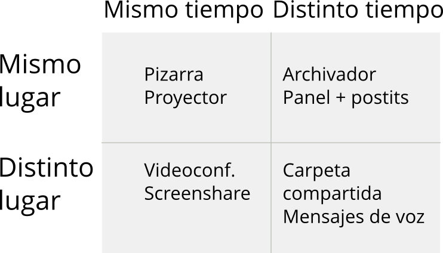Simon Kaplan. 1997. The CSCW column: the quadrant model of GroupWare.
Modelo de control bimanual
- Mano no preferida
- Guía a la preferida
- Marca el marco de referencia para la preferida
- Realiza movimientos no-precisos
- Mano preferida
- Sigue a la no-preferida
- Trabaja en el marco definido por la no-preferida
- Realiza movimientos precisos
MacKenzie, I. S.; Guiard, Y. (2001). The two-handed desktop interface: Are we there yet? Extended Abstracts of the ACM Conference on Human Factors in Computing Systems - CHI 2001
Modelo de entrada gráfica
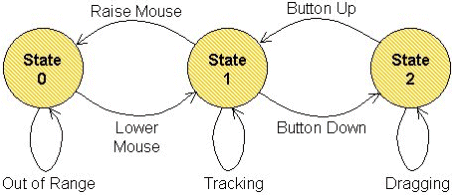Buxton, W. A. S. (1990). A three-state model of graphical input. Proceedings of INTERACT '90
Implicit interactions
Ju, Leifer, "The Design of Implicit Interactions: Making Interactive Systems Less Obnoxious." Design Issues: Special Issue on Design Research in Interaction Design, 24(3) Summer 2008.Actividad: modela una interacción
Crea un modelo que describa una interacción. Puede ser específico (una interacción específica) o general (un tipo de interacciones).
La ley de Fitts
Tiempo = a + b log2 ( D / S + 1 )
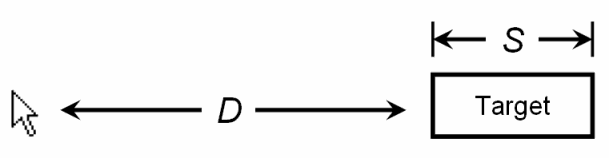Implicaciones para el diseño
- Considerar el tamaño de los elementos interactivos
- Usar esquinas y bordes
- Usar la posición actual/usual del puntero
- Permite comparar distintos elementos de entrada
Tiempo de reacción (Hick-Hyman)
Tiempo = a + b log2 (n + 1)
Cuesta menos eaccionar ante los eventos más frecuantes
KLM (Card, Moran, and Newell)
Asigna unos tiempoa a cada tipo de interacción:
- K. Pulsar tecla.
- P. Apuntar a un elemento.
- H. Colocar manos en dispositivo.
- D. Dibujar una linea.
- M. Preparación mental.
- R. Respuesta del dispositivo.
Prototipado
Simula lo que no puedas crear:
- Porque es demasiado costoso
- Porque no es relevante para lo que quieres demostrar
SixthSense
SixthSense
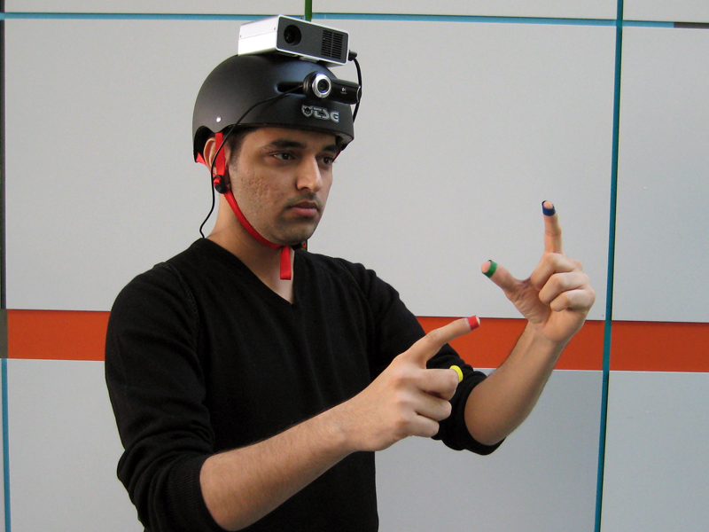Video
Ilustrar el funcionamiento del producto